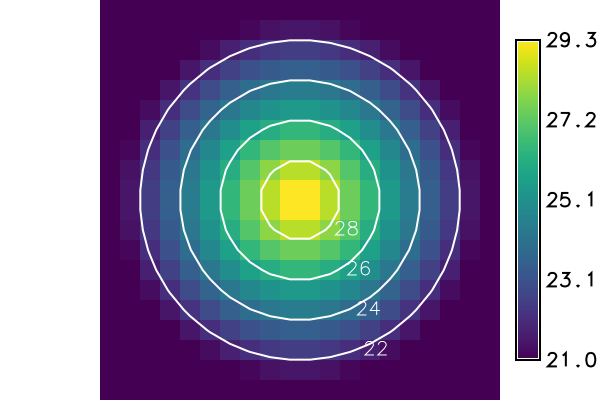

The option input names the space time raster dataset, the option
output the new space time vector dataset. The new dataset takes the
temporal type, the semantic type, the title and the description of the input
dataset. The option where takes an SQL condition on the registered maps
and selects the maps to process, for instance by their start_time; without
it, all maps are processed.
Either levels or step sets the contour levels:
2 gives the even numbers within the values of each map.If both levels and step are given, r.contour uses the list and ignores the step. A level equal to the smallest or the largest value of a map gets a line through the cells of that value; a value held by a single cell gives a single point, which is not written. A minlevel above maxlevel is an error, and no dataset is created.
The option cut leaves out the contour lines with fewer points than the
given number, counted in the new vector map. A line that touches another line
is split there into pieces; a piece is kept when the lines it meets have
cut points or more together, so that no line gets a gap. The default 0
keeps all lines.
Each new vector map has an attribute table with the column level, the
contour level of its lines; t.vect.db.select prints
these tables for the whole dataset. The flag -t creates the vector maps
without attribute tables.
The option nprocs sets the number of r.contour runs at the same time,
1 by default. More than one run at a time works only with -t: without
it, t.rast.contour sets nprocs to 1 and warns, because the attribute
tables cannot be created in parallel.
The new vector maps are named after the option basename, followed by an underscore and a suffix that the option suffix chooses:
gran (the default) takes the start time of the raster map, cut to the
granularity of the input dataset: 2026_07_01 in a dataset of days. A
monthly series from the last day of a month (January 31, February 28) has
the granularity of one month and gets year and month: 2026_01. A dataset
of a single time instance has no granularity; gran then takes the full
start time, as time does.time takes the full start time: 2026_07_01T00_00_00.num numbers the selected maps from 1, with five digits: 00001.
num%03 gives three digits: 001.In a dataset with relative time, each suffix gives the number, because a relative time has no calendar date.
A raster map can give a vector map without lines, for instance when no level lies within its values or when the map has no values. Such an empty vector map is removed and not registered, unless the flag -n is given; then it is registered as well.
If where selects no map, t.rast.contour warns that the space time raster dataset is empty and creates no output dataset.
If neither levels nor step is given, t.rast.contour stops with the
error "Either <levels> or <step> option must be specified"; r.contour
refuses a step of 0 with "This step value is not allowed". In both cases
no dataset is created. An unknown suffix is refused before anything is
written, for instance with "Invalid suffix <gram>, use gran, time, num or
num%NN" for suffix=gram. An SQL error in where stops the tool with a
message that begins with "Invalid where condition".
An existing output dataset is replaced only with --overwrite; the vector maps of the same names are then replaced as well.
The input dataset can be in another mapset of the project; the name with the
mapset (input=tmax@PERMANENT) selects it. The new vector maps and the new
dataset are always created in the current mapset, as the last example shows.
nc_spm_08_grass7 from
the GRASS sample data. The first
example creates the mapset t_rast_contour and sets the computational region
to North Carolina with cells of 1 km; the later examples work in this mapset
and region, except the last, which creates a second mapset. The temperature
maps are generated, not measured.
temperature_summer holds three maps of the monthly mean air
temperature in 2020, in degrees Celsius rounded to tenths: June, July and
August. They are generated from the elevation model elev_state_500m: 16.5
degrees at sea level and the northing 160 km, an annual cycle of plus and
minus 10.5 degrees with its maximum in July, 6.5 degrees less for every 1000 m
of elevation, and 1 degree more for every 100 km to the south. The first block
creates the twelve monthly maps of the year, temperature_monthly_2020_01 to
_12, and registers the three summer maps in temperature_summer; the later
examples use the other months as well. Outside North Carolina the maps have
no values. The list shows that June reaches 12.0 to 26.5 degrees, July 13.9 to
28.4 and August 13.1 to 27.6.
With step 5, the levels are the multiples of 5 within the smallest and
the largest value of each map. All three maps hold the levels 15, 20 and 25;
none reaches 30. The first block computes the contour lines and lists the new
vector maps with their number of lines, which counts every separate line, the
short ones too. The default suffix gran names the maps after the month. The
second block prints the levels from the attribute tables with
t.vect.db.select. The third block shows with t.info that the
new dataset isotherms has the time, the semantic type mean, the title and
the description of the input dataset, and 228 + 342 + 239 = 809 lines.
r.contour writes 3D lines at the height of their level, so the top and the
bottom of the dataset are the highest and the lowest level, 25 and 15.
Command line:
g.mapset -c mapset=t_rast_contour
g.region raster=elev_state_500m res=1000 -a
for month in $(seq 12); do
echo "temperature_monthly_2020_$(printf %02d $month) = round((16.5" \
"+ 10.5 * cos(30 * ($month - 7.2)) - 0.0065 * elev_state_500m" \
"- 0.00001 * (y() - 160000)) * 10) / 10.0"
done | r.mapcalc file=-
t.create output=temperature_summer title="Summer air temperature" \
description="Monthly mean air temperature June to August 2020 in degree Celsius"
t.register -i input=temperature_summer \
maps=temperature_monthly_2020_06,temperature_monthly_2020_07,temperature_monthly_2020_08 \
start=2020-06-01 increment="1 month"
t.rast.list input=temperature_summer columns=name,start_time,min,max
t.rast.contour input=temperature_summer output=isotherms basename=isotherm \
step=5
t.vect.list input=isotherms columns=name,start_time,end_time,lines
name|start_time|min|max temperature_monthly_2020_06|2020-06-01 00:00:00|12.0|26.5 temperature_monthly_2020_07|2020-07-01 00:00:00|13.9|28.4 temperature_monthly_2020_08|2020-08-01 00:00:00|13.1|27.6 name|start_time|end_time|lines isotherm_2020_06|2020-06-01 00:00:00|2020-07-01 00:00:00|228 isotherm_2020_07|2020-07-01 00:00:00|2020-08-01 00:00:00|342 isotherm_2020_08|2020-08-01 00:00:00|2020-09-01 00:00:00|239
t.vect.db.select input=isotherms columns=level
start_time|end_time|level 2020-06-01 00:00:00|2020-07-01 00:00:00|15 2020-06-01 00:00:00|2020-07-01 00:00:00|20 2020-06-01 00:00:00|2020-07-01 00:00:00|25 2020-07-01 00:00:00|2020-08-01 00:00:00|15 2020-07-01 00:00:00|2020-08-01 00:00:00|20 2020-07-01 00:00:00|2020-08-01 00:00:00|25 2020-08-01 00:00:00|2020-09-01 00:00:00|15 2020-08-01 00:00:00|2020-09-01 00:00:00|20 2020-08-01 00:00:00|2020-09-01 00:00:00|25
t.info type=stvds input=isotherms | awk '/Semantic type|Start time|End time|Number of lines|Number of registered|Top|Bottom/ {print} /Title:|Description:/ {print; getline; print}'
| Semantic type:.............. mean | Start time:................. 2020-06-01 00:00:00 | End time:................... 2020-09-01 00:00:00 | Top:........................ 25.0 | Bottom:..................... 15.0 | Number of lines ............ 809 | Number of registered maps:.. 3 | Title: | Summer air temperature | Description: | Monthly mean air temperature June to August 2020 in degree Celsius
Python (grass.tools):
from grass.tools import Tools
tools = Tools()
tools.g_mapset(flags="c", mapset="t_rast_contour")
tools.g_region(raster="elev_state_500m", res=1000, flags="a")
months = range(1, 13)
tools.r_mapcalc(
expression="\n".join(
f"temperature_monthly_2020_{month:02d} = round((16.5"
f" + 10.5 * cos(30 * ({month} - 7.2)) - 0.0065 * elev_state_500m"
" - 0.00001 * (y() - 160000)) * 10) / 10.0"
for month in months
)
)
tools.t_create(
output="temperature_summer",
title="Summer air temperature",
description="Monthly mean air temperature June to August 2020 in degree Celsius",
)
tools.t_register(
input="temperature_summer",
maps="temperature_monthly_2020_06,temperature_monthly_2020_07,temperature_monthly_2020_08",
start="2020-06-01",
increment="1 month",
flags="i",
)
print(
tools.t_rast_list(
input="temperature_summer", columns="name,start_time,min,max"
).text
)
tools.t_rast_contour(
input="temperature_summer",
output="isotherms",
basename="isotherm",
step=5,
)
result = tools.t_vect_list(input="isotherms", columns="name,start_time,end_time,lines")
print(result.text)
name|start_time|min|max temperature_monthly_2020_06|2020-06-01 00:00:00|12.0|26.5 temperature_monthly_2020_07|2020-07-01 00:00:00|13.9|28.4 temperature_monthly_2020_08|2020-08-01 00:00:00|13.1|27.6 name|start_time|end_time|lines isotherm_2020_06|2020-06-01 00:00:00|2020-07-01 00:00:00|228 isotherm_2020_07|2020-07-01 00:00:00|2020-08-01 00:00:00|342 isotherm_2020_08|2020-08-01 00:00:00|2020-09-01 00:00:00|239
print(tools.t_vect_db_select(input="isotherms", columns="level").text)
start_time|end_time|level 2020-06-01 00:00:00|2020-07-01 00:00:00|15 2020-06-01 00:00:00|2020-07-01 00:00:00|20 2020-06-01 00:00:00|2020-07-01 00:00:00|25 2020-07-01 00:00:00|2020-08-01 00:00:00|15 2020-07-01 00:00:00|2020-08-01 00:00:00|20 2020-07-01 00:00:00|2020-08-01 00:00:00|25 2020-08-01 00:00:00|2020-09-01 00:00:00|15 2020-08-01 00:00:00|2020-09-01 00:00:00|20 2020-08-01 00:00:00|2020-09-01 00:00:00|25
info = tools.t_info(type="stvds", input="isotherms").stdout.splitlines()
keys = ("Semantic type", "Start time", "End time", "Number of lines")
keys += ("Number of registered", "Top", "Bottom")
for number, line in enumerate(info):
if any(key in line for key in keys):
print(line)
if "Title:" in line or "Description:" in line:
print(line)
print(info[number + 1])
| Semantic type:.............. mean | Start time:................. 2020-06-01 00:00:00 | End time:................... 2020-09-01 00:00:00 | Top:........................ 25.0 | Bottom:..................... 15.0 | Number of lines ............ 809 | Number of registered maps:.. 3 | Title: | Summer air temperature | Description: | Monthly mean air temperature June to August 2020 in degree Celsius
27,28, July (up to 28.4 degrees) has lines at both levels and
August (up to 27.6 degrees) only at 27 degrees. June stays below 26.5 degrees,
so its vector map has no line: t.rast.contour removes it and registers two
maps.
In the second block, the flag -n keeps the empty map of June, and
--overwrite replaces the dataset heat of the first block together with
its vector maps.
Command line:
t.rast.contour input=temperature_summer output=heat basename=heat \
levels=27,28
t.vect.list input=heat columns=name,start_time,lines
name|start_time|lines heat_2020_07|2020-07-01 00:00:00|41 heat_2020_08|2020-08-01 00:00:00|12
t.rast.contour -n input=temperature_summer output=heat basename=heat \
levels=27,28 --overwrite
t.vect.list input=heat columns=name,start_time,lines
name|start_time|lines heat_2020_06|2020-06-01 00:00:00|0 heat_2020_07|2020-07-01 00:00:00|41 heat_2020_08|2020-08-01 00:00:00|12
Python (grass.tools):
tools.t_rast_contour(
input="temperature_summer",
output="heat",
basename="heat",
levels=[27, 28],
)
print(tools.t_vect_list(input="heat", columns="name,start_time,lines").text)
name|start_time|lines heat_2020_07|2020-07-01 00:00:00|41 heat_2020_08|2020-08-01 00:00:00|12
tools.t_rast_contour(
input="temperature_summer",
output="heat",
basename="heat",
levels=[27, 28],
flags="n",
overwrite=True,
)
print(tools.t_vect_list(input="heat", columns="name,start_time,lines").text)
name|start_time|lines heat_2020_06|2020-06-01 00:00:00|0 heat_2020_07|2020-07-01 00:00:00|41 heat_2020_08|2020-08-01 00:00:00|12
2,
minlevel 20 and maxlevel 24, every month has lines at 20, 22 and
24 degrees.
The second block shows that maxlevel is a limit, not a level, when it does
not lie on the grid of minlevel and step: with maxlevel 23, July
and August have lines at 20 and 22 degrees. The condition in where leaves
out June.
The third and the fourth block show maps whose values lie outside the limits; such a map gets no level and so no line:
27 and maxlevel 28, the values of June (12.0 to
26.5) lie wholly below minlevel. Its vector map is empty and is not
registered; July has lines at 27 and 28 degrees, August at 27 degrees only,
as in the previous example.5 and maxlevel 10, the values of every month lie
wholly above maxlevel, so no month has a line. With -n, the three
empty vector maps are registered all the same.Command line:
t.rast.contour input=temperature_summer output=degrees basename=degrees \
step=2 minlevel=20 maxlevel=24
t.vect.db.select input=degrees columns=level
start_time|end_time|level 2020-06-01 00:00:00|2020-07-01 00:00:00|20 2020-06-01 00:00:00|2020-07-01 00:00:00|22 2020-06-01 00:00:00|2020-07-01 00:00:00|24 2020-07-01 00:00:00|2020-08-01 00:00:00|20 2020-07-01 00:00:00|2020-08-01 00:00:00|22 2020-07-01 00:00:00|2020-08-01 00:00:00|24 2020-08-01 00:00:00|2020-09-01 00:00:00|20 2020-08-01 00:00:00|2020-09-01 00:00:00|22 2020-08-01 00:00:00|2020-09-01 00:00:00|24
t.rast.contour input=temperature_summer output=half_top basename=half_top \
step=2 minlevel=20 maxlevel=23 where="start_time >= '2020-07-01'"
t.vect.db.select input=half_top columns=level
start_time|end_time|level 2020-07-01 00:00:00|2020-08-01 00:00:00|20 2020-07-01 00:00:00|2020-08-01 00:00:00|22 2020-08-01 00:00:00|2020-09-01 00:00:00|20 2020-08-01 00:00:00|2020-09-01 00:00:00|22
t.rast.contour input=temperature_summer output=below basename=below \
step=1 minlevel=27 maxlevel=28
t.vect.list input=below columns=name,lines
name|lines below_2020_07|41 below_2020_08|12
t.rast.contour -n input=temperature_summer output=above basename=above \
step=1 minlevel=5 maxlevel=10
t.vect.list input=above columns=name,lines
name|lines above_2020_06|0 above_2020_07|0 above_2020_08|0
Python (grass.tools):
tools.t_rast_contour(
input="temperature_summer",
output="degrees",
basename="degrees",
step=2,
minlevel=20,
maxlevel=24,
)
print(tools.t_vect_db_select(input="degrees", columns="level").text)
start_time|end_time|level 2020-06-01 00:00:00|2020-07-01 00:00:00|20 2020-06-01 00:00:00|2020-07-01 00:00:00|22 2020-06-01 00:00:00|2020-07-01 00:00:00|24 2020-07-01 00:00:00|2020-08-01 00:00:00|20 2020-07-01 00:00:00|2020-08-01 00:00:00|22 2020-07-01 00:00:00|2020-08-01 00:00:00|24 2020-08-01 00:00:00|2020-09-01 00:00:00|20 2020-08-01 00:00:00|2020-09-01 00:00:00|22 2020-08-01 00:00:00|2020-09-01 00:00:00|24
tools.t_rast_contour(
input="temperature_summer",
output="half_top",
basename="half_top",
step=2,
minlevel=20,
maxlevel=23,
where="start_time >= '2020-07-01'",
)
print(tools.t_vect_db_select(input="half_top", columns="level").text)
start_time|end_time|level 2020-07-01 00:00:00|2020-08-01 00:00:00|20 2020-07-01 00:00:00|2020-08-01 00:00:00|22 2020-08-01 00:00:00|2020-09-01 00:00:00|20 2020-08-01 00:00:00|2020-09-01 00:00:00|22
tools.t_rast_contour(
input="temperature_summer",
output="below",
basename="below",
step=1,
minlevel=27,
maxlevel=28,
)
print(tools.t_vect_list(input="below", columns="name,lines").text)
name|lines below_2020_07|41 below_2020_08|12
tools.t_rast_contour(
input="temperature_summer",
output="above",
basename="above",
step=1,
minlevel=5,
maxlevel=10,
flags="n",
)
print(tools.t_vect_list(input="above", columns="name,lines").text)
name|lines above_2020_06|0 above_2020_07|0 above_2020_08|0
10, the short lines are left out. The block lists the number of
lines: 97, 166 and 101 instead of 228, 342 and 239 with the default 0 in the
first example.
Command line:
t.rast.contour input=temperature_summer output=long basename=long step=5 cut=10 t.vect.list input=long columns=name,lines
name|lines long_2020_06|97 long_2020_07|166 long_2020_08|101
Python (grass.tools):
tools.t_rast_contour(
input="temperature_summer", output="long", basename="long", step=5, cut=10
)
print(tools.t_vect_list(input="long", columns="name,lines").text)
name|lines long_2020_06|97 long_2020_07|166 long_2020_08|101
long_2020_07 from the previous example, computed with cut 10. d.rast
draws the raster map and d.vect the state border, then each level of the
contour lines in its own colour with the condition where on the column
level; d.legend adds the colour scale of the temperature, labelled every
5 degrees (label_step) without decimals (digits). r.colors sets the
colour table celsius on the map of this mapset first.
Command line:
r.colors map=temperature_monthly_2020_07 color=celsius d.mon start=cairo output=t_rast_contour_lines.png width=800 height=360 d.rast map=temperature_monthly_2020_07 d.vect map=nc_state type=boundary color=gray d.vect map=long_2020_07 where="level = 15" color=blue width=2 d.vect map=long_2020_07 where="level = 20" color=white width=2 d.vect map=long_2020_07 where="level = 25" color=black width=2 d.legend raster=temperature_monthly_2020_07 range=10,30 at=12,88,86,90 label_step=5 digits=0 d.mon stop=cairo
Python (grass.tools):
tools.r_colors(map="temperature_monthly_2020_07", color="celsius")
tools.d_mon(start="cairo", output="t_rast_contour_lines.png", width=800, height=360)
tools.d_rast(map="temperature_monthly_2020_07")
tools.d_vect(map="nc_state", type="boundary", color="gray")
for level, color in ((15, "blue"), (20, "white"), (25, "black")):
tools.d_vect(map="long_2020_07", where=f"level = {level}", color=color, width=2)
tools.d_legend(
raster="temperature_monthly_2020_07",
range=[10, 30],
at=[12, 88, 86, 90],
label_step=5,
digits=0,
)
tools.d_mon(stop="cairo")

Figure: Contour lines at 15, 20 and 25 degrees (blue, white, black) over the
generated mean air temperature of July 2020, temperature_monthly_2020_07.
time takes the full start time of each raster map.num%03 numbers the maps with three digits. The condition in where
selects July and August, and the numbers count the selected maps from 1.forecast holds a forecast of the July and the August map, as
months 1 and 2 after the start of a model run; the default suffix gran
numbers the maps.Command line:
t.rast.contour input=temperature_summer output=timed basename=timed step=5 \
suffix=time
t.vect.list input=timed columns=name
name timed_2020_06_01T00_00_00 timed_2020_07_01T00_00_00 timed_2020_08_01T00_00_00
t.rast.contour input=temperature_summer output=hot_months basename=hot_month \
step=5 suffix=num%03 where="start_time >= '2020-07-01'"
t.vect.list input=hot_months columns=name,start_time
name|start_time hot_month_001|2020-07-01 00:00:00 hot_month_002|2020-08-01 00:00:00
r.mapcalc expression="forecast_1 = temperature_monthly_2020_07"
r.mapcalc expression="forecast_2 = temperature_monthly_2020_08"
t.create output=forecast temporaltype=relative title="Forecast" \
description="Forecast of the monthly mean air temperature"
t.register -i input=forecast maps=forecast_1,forecast_2 \
start=1 increment=1 unit=months
t.rast.contour input=forecast output=forecast_isotherms \
basename=forecast_isotherm step=5
t.vect.list input=forecast_isotherms columns=name,start_time,end_time,lines
name|start_time|end_time|lines forecast_isotherm_00001|1|2|342 forecast_isotherm_00002|2|3|239
Python (grass.tools):
tools.t_rast_contour(
input="temperature_summer",
output="timed",
basename="timed",
step=5,
suffix="time",
)
print(tools.t_vect_list(input="timed", columns="name").text)
name timed_2020_06_01T00_00_00 timed_2020_07_01T00_00_00 timed_2020_08_01T00_00_00
tools.t_rast_contour(
input="temperature_summer",
output="hot_months",
basename="hot_month",
step=5,
suffix="num%03",
where="start_time >= '2020-07-01'",
)
print(tools.t_vect_list(input="hot_months", columns="name,start_time").text)
name|start_time hot_month_001|2020-07-01 00:00:00 hot_month_002|2020-08-01 00:00:00
tools.r_mapcalc(expression="forecast_1 = temperature_monthly_2020_07")
tools.r_mapcalc(expression="forecast_2 = temperature_monthly_2020_08")
tools.t_create(
output="forecast",
temporaltype="relative",
title="Forecast",
description="Forecast of the monthly mean air temperature",
)
tools.t_register(
input="forecast",
maps="forecast_1,forecast_2",
start=1,
increment=1,
unit="months",
flags="i",
)
tools.t_rast_contour(
input="forecast",
output="forecast_isotherms",
basename="forecast_isotherm",
step=5,
)
result = tools.t_vect_list(
input="forecast_isotherms", columns="name,start_time,end_time,lines"
)
print(result.text)
name|start_time|end_time|lines forecast_isotherm_00001|1|2|342 forecast_isotherm_00002|2|3|239
Command line:
t.rast.contour -t input=temperature_summer output=quick basename=quick step=5 \
nprocs=3
t.vect.list input=quick columns=name,lines
v.info -e map=quick_2020_07 | grep num_dblinks
name|lines quick_2020_06|228 quick_2020_07|342 quick_2020_08|239 num_dblinks=0
Python (grass.tools):
tools.t_rast_contour(
input="temperature_summer",
output="quick",
basename="quick",
step=5,
nprocs=3,
flags="t",
)
print(tools.t_vect_list(input="quick", columns="name,lines").text)
info = tools.v_info(map="quick_2020_07", flags="e").keyval
print(f"num_dblinks={info['num_dblinks']}")
name|lines quick_2020_06|228 quick_2020_07|342 quick_2020_08|239 num_dblinks=0
t_rast_contour_2 and switches to it. The
dataset temperature_summer stays in t_rast_contour and is named with its
mapset, which does not have to be in the search path; the new dataset west and
its vector maps are created in t_rast_contour_2, as the column id shows.
The region of the new mapset is set to the western half of the maps, 420 cells
wide, so the lines end at the centre of the eastern cells of the region, x =
543500. The column east shows it for July and August. In June, the easternmost
point of a line is 535500: no line of June reaches the border cell column.
The second block restricts the area to the same western half with a raster mask instead, on the full region. The cells outside the mask are null cells, and the lines end at them as at the border of the region: the lines, the nodes and the eastern edge are the same as with the region.
Command line:
g.mapset -c mapset=t_rast_contour_2
g.region w=124000 e=544000 n=319000 s=-16000 res=1000
t.rast.contour input=temperature_summer@t_rast_contour output=west \
basename=west step=5
t.vect.list input=west columns=id,lines,nodes,east
id|lines|nodes|east west_2020_06@t_rast_contour_2|176|205|535500.0 west_2020_07@t_rast_contour_2|262|256|543500.0 west_2020_08@t_rast_contour_2|150|182|543500.0
g.region raster=elev_state_500m res=1000 -a
r.mapcalc expression="west_half = if(x() < 544000, 1, null())"
r.mask raster=west_half
t.rast.contour input=temperature_summer@t_rast_contour output=masked \
basename=masked step=5
r.mask -r
t.vect.list input=masked columns=id,lines,nodes,east
id|lines|nodes|east masked_2020_06@t_rast_contour_2|176|205|535500.0 masked_2020_07@t_rast_contour_2|262|256|543500.0 masked_2020_08@t_rast_contour_2|150|182|543500.0
Python (grass.tools):
tools.g_mapset(mapset="t_rast_contour_2", flags="c")
tools.g_region(w=124000, e=544000, n=319000, s=-16000, res=1000)
tools.t_rast_contour(
input="temperature_summer@t_rast_contour",
output="west",
basename="west",
step=5,
)
print(tools.t_vect_list(input="west", columns="id,lines,nodes,east").text)
id|lines|nodes|east west_2020_06@t_rast_contour_2|176|205|535500.0 west_2020_07@t_rast_contour_2|262|256|543500.0 west_2020_08@t_rast_contour_2|150|182|543500.0
tools.g_region(raster="elev_state_500m", res=1000, flags="a")
tools.r_mapcalc(expression="west_half = if(x() < 544000, 1, null())")
tools.r_mask(raster="west_half")
tools.t_rast_contour(
input="temperature_summer@t_rast_contour",
output="masked",
basename="masked",
step=5,
)
tools.r_mask(flags="r")
print(tools.t_vect_list(input="masked", columns="id,lines,nodes,east").text)
id|lines|nodes|east masked_2020_06@t_rast_contour_2|176|205|535500.0 masked_2020_07@t_rast_contour_2|262|256|543500.0 masked_2020_08@t_rast_contour_2|150|182|543500.0